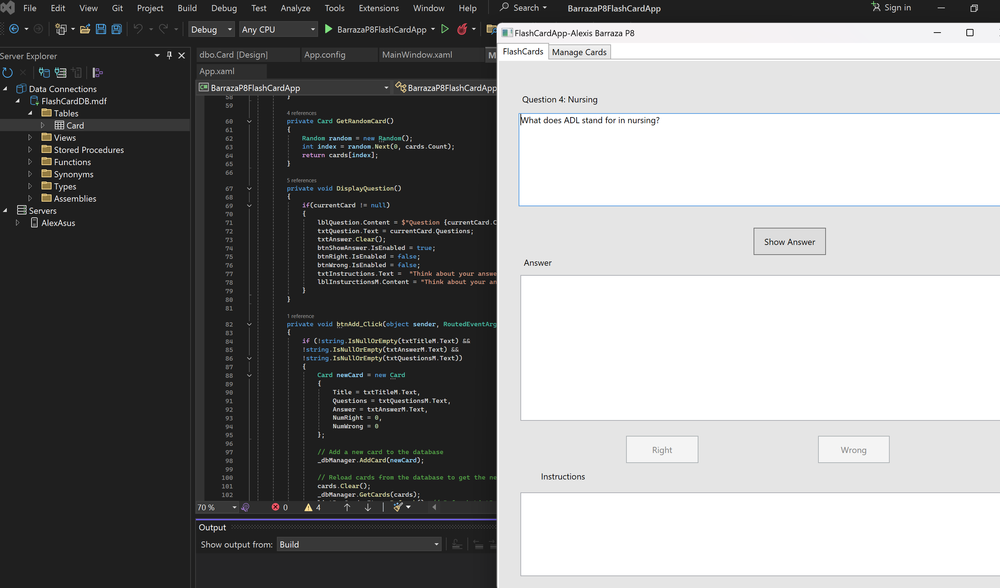

Tic-Tac-Toe in JavaScript
A simple well-known game. It is played by two players on a 3x3 grid.Players get their own symbol, either X or O. Provides data validation such as player names, fields for guesses, game results display section, Such as player names who the winner is, scores. Includes a restart button, CSS/HTML that make the game look complete and user friendly.
You Can Play the Game in the Following Link Click here to play the game.

Flash Card App in C#
This project is a Flash Card Application built using C# and WPF that allowss the users to create, update, delete and study flash cards. THe application enables users to add new flashcards with a title, question and answer, which are then stored in a SQL Server database. Users can view the list of all flashcards, display the answer for a selected flashcard, and mark the flashcard as correct or incorrect, based on the answer. The application also supports updating and deleting existing flashcards. Users can select a flashcard from the list, edit its content, and update the database With new information.The project is a useful tool for studing and memorizing information, leveraging a simple yet effective user interface and backend database management to provide a smooth and functional experience.
Text Based Adventure Game in C#
The TextBasedAdventureGame project is built using C# and exemplifies object-oriented design to create a text-based adventure experience. Key classes like Map, Player, MapLocation, TravelOption, and PortableHidingPlace organize the game's structure. The Map class handles location management and player navigation, while Player manages inventory and location. The MapLocation class describes in-game locations, TravelOption defines movement possibilities, and PortableHidingPlace enables item concealment within other items. This architecture facilitates a dynamic game environment with interactive exploration and inventory management. The TravelWindow class, implemented as a WPF window, provides the game's user interface, allowing players to navigate locations and manage items through a graphical interface. It updates the display based on player actions, such as moving between locations, taking or dropping items, and handling game events like winning or losing. The window integrates event handlers and methods to respond to user inputs, ensuring a seamless gameplay experience. This approach highlights principles of encapsulation and user interface design, effectively bridging gameplay logic and player interaction
Game Of Life in C++
The C++ code implements Conway's Game of Life and its variants through object-oriented design. It features classes like ConwayCell, FredkinCell, ModifiedFredkinCell, Seeds, and AlexisCell, inheriting from the LifeCell base class, promoting code reuse and modularity. Each cell type computes living neighbors and updates states based on specific rules. Grid representation, stored as a two-dimensional array, loads initial patterns from text files. Dynamic polymorphism selects methods based on the chosen cell type, ensuring adaptability. A driver program manages the simulation, allowing user interaction for cell type and pattern selection. It iterates through generations, updating the grid and displaying each state until termination. The code showcases object-oriented principles, encapsulation, and polymorphism, effectively simulating Conway's Game of Life and exploring cellular automata variations.